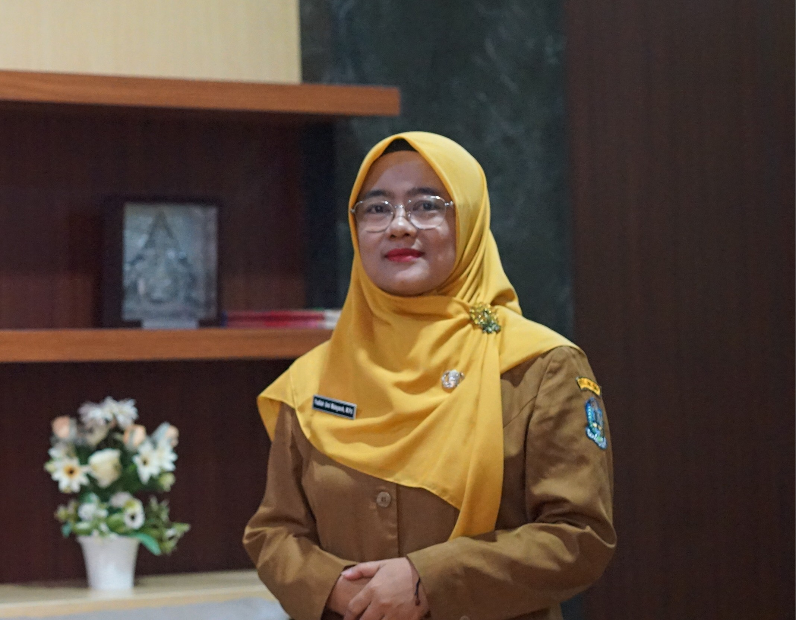

Sambutan Kepala Sekolah

Fadilah Umi Maisyaroh, M.Pd.
Kepala SMAN 1 Kepanjen
Assalamu’alaikum Warahmatullahi Wabarakatuh, Salam Sejahtera untuk kita semua.
Selamat datang di website resmi SMA Negeri 1 Kepanjen. Puji dan syukur senantiasa kita panjatkan ke hadirat Tuhan Yang Maha Esa atas karunia dan limpahan rahmat-Nya sehingga media informasi ini dapat hadir sebagai jembatan komunikasi bagi seluruh sivitas akademika, orang tua siswa, alumni, dan masyarakat luas.
SMAN 1 Kepanjen berkomitmen menghadirkan ekosistem pembelajaran yang bermutu, inklusif, dan berorientasi masa depan dengan berlandaskan nilai integritas moral, penguasaan teknologi informasi, serta aksi nyata peduli pelestarian lingkungan hidup.
Visi & Misi Sekolah
Visi Sekolah
"Terwujudnya Lulusan yang Bertaqwa, Berkarakter Unggul, Cerdas, Terampil, Mandiri, Berprestasi Global, dan Berbudaya Lingkungan Hidup."
Misi Sekolah
- Menumbuhkembangkan penghayatan dan pengamalan nilai-nilai keagamaan guna membentuk generasi yang bertakwa dan berakhlak mulia.
- Menyelenggarakan proses pembelajaran yang inovatif, bermutu, dan berpusat pada pengembangan potensi peserta didik.
- Mendorong dan memfasilitasi pencapaian prestasi akademik maupun non-akademik di tingkat regional, nasional, dan internasional.
- Menumbuhkan budaya disiplin, kejujuran, semangat gotong royong, toleransi, serta cinta tanah air pada seluruh warga sekolah.
- Menciptakan lingkungan sekolah yang asri, bersih, sehat, dan ramah lingkungan sebagai sarana pembentukan karakter peduli alam.